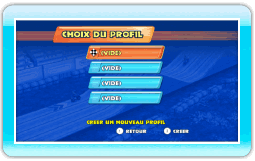
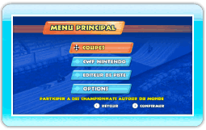

9 |
Commencer une partie |
 |
Lorsque vous jouez pour la première fois, vous devez créer un nouveau profil en sélectionnant un emplacement vide. Vous pouvez alors entrer un nom pour ce profil. Si vous avez déjà un profil, sélectionnez simplement le profil avec lequel vous souhaitez jouer.
Note: choisissez un profil et appuyez sur
 pour afficher le menu des options du profil, à partir duquel vous pouvez changer le nom du profil ou effacer le profil. pour afficher le menu des options du profil, à partir duquel vous pouvez changer le nom du profil ou effacer le profil.Attention! Les profils effacés ne peuvent pas être récupérés. Lorsque vous avez sélectionné un profil, le menu principal s’affiche.
|
 |
 |
 |